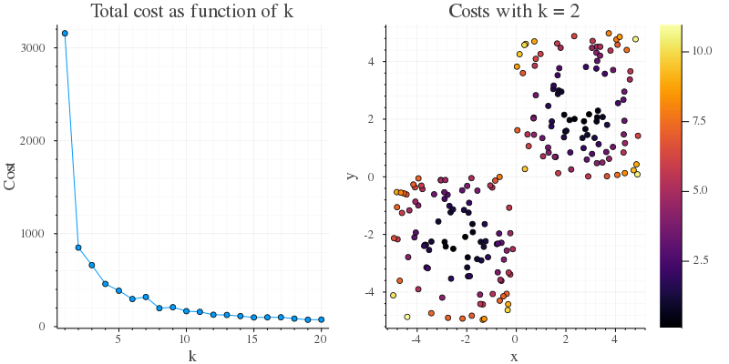
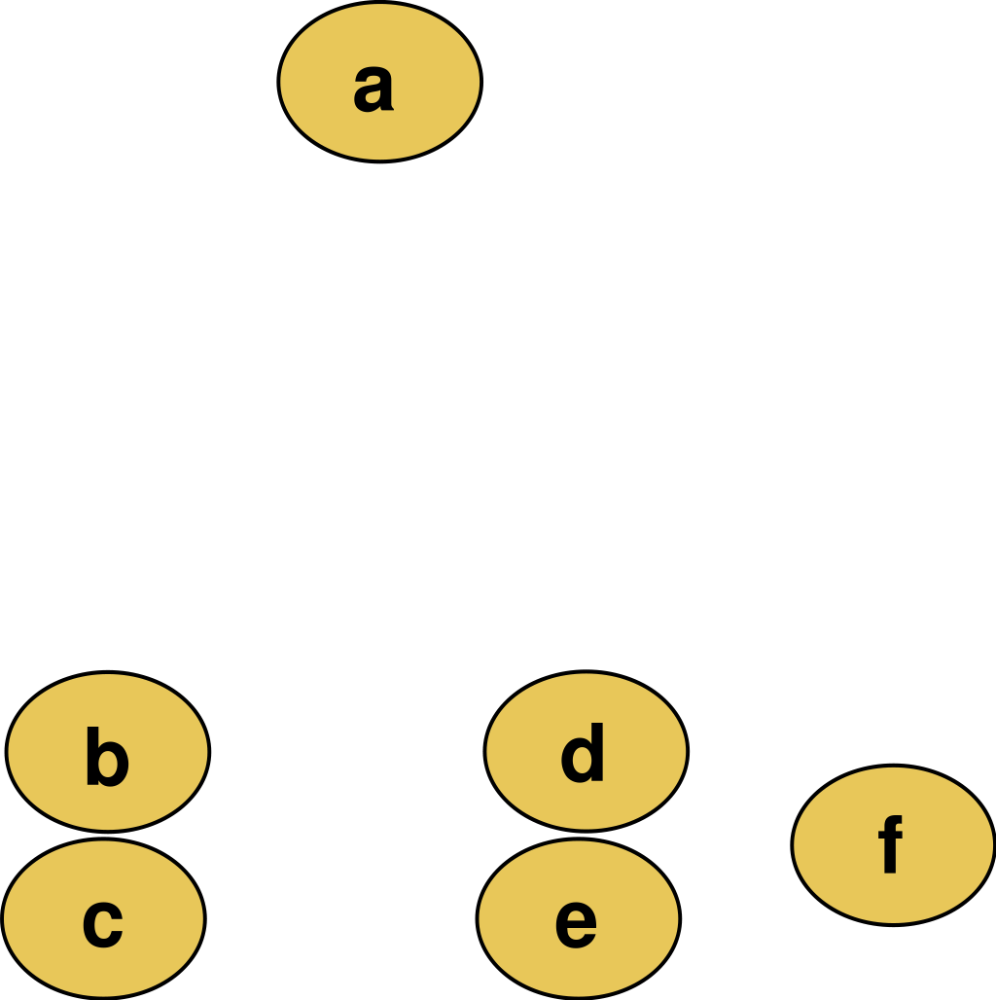
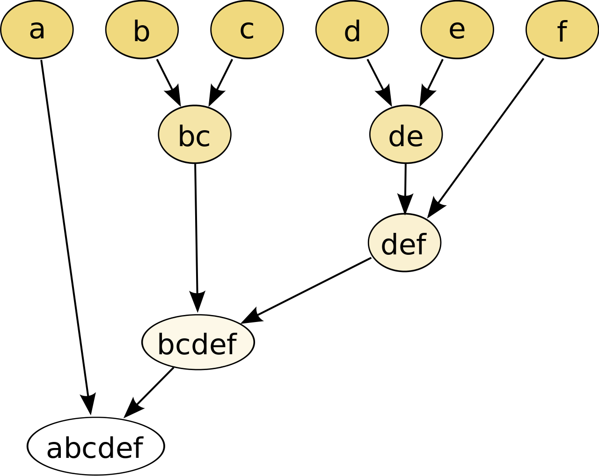
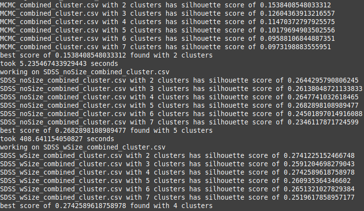
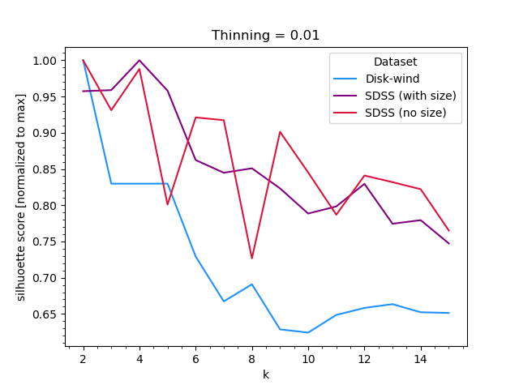
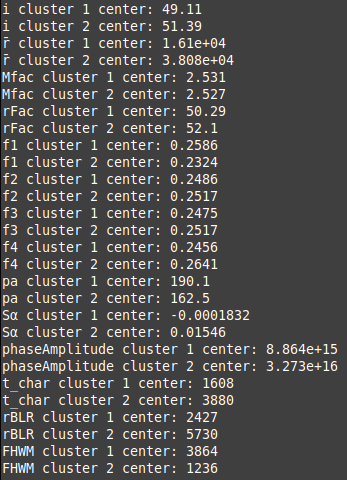
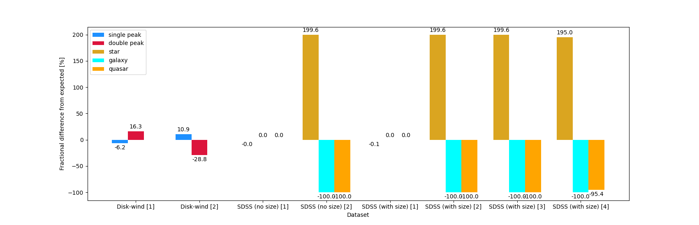

Clustering
Overview
Clustering is a pretty broad category in machine learning, including many different algorithms that can be used to discover interesting patterns in data. There are two main camps in clustering: partitional and hierarchical methods. Partitional methods are those that attempt to partition the data into a set number of disjoint clusters (this includes methods like k-means), while hierarchical methods are those that create a hierarchical decomposition of the data following a tree-like structure (such as hclust in R). We'll explore both of these methods, applying k-means in Python and hclust in R to our data.
Regardless of which clustering method is used, there are two important high-level decisions we must make before we can begin clustering: how many clusters to use, and how to measure the similarity between data points. Often to accomplish the first task we can simply repeat the clustering process for a range of cluster numbers and choose the one that best fits our needs. The second task is a little more subjective, and depends on the data and what associations we are trying to find. For example, if we are trying to cluster people based on their political views, we might use a distance metric that measures how similar their voting records are, and in this case we don't even need the data to be inherently quantitative. At the other end of the spectrum, if we are simply trying to cluster largely quantitative data (such as the data we have) we might use a distance metric such as Euclidean distance, which is simply the square root of the sum of the squared differences between each variable's position in parameter space.
k-means

First, we will apply k-means to our data, using a Euclidean distance metric as our data are quantitative and we would like to find clusters in parameter space. k-means works by clustering our data into k clusters, where as mentioned above k is the number of clusters, a parameter we must give to the algorithm. The math behind k-means is pretty simple, in that we are simply minimizing the sum of the squared distances between each point and the centroid of its cluster. This is done iteratively, with each iteration updating the cluster centroids and reassigning points to the cluster with the closest centroid. Formally this is given by: $$\textrm{minimize }\sum_{i=1}^{k}\sum_{x\in C_i}||x-\mu_i||^2$$ Essentially for each cluster \(C_i\) we are minimizing the variance of the points in that cluster, thus assigning points to the cluster with the closest mean \( \mu_i \). How do you choose the number of clusters? At left is a plot of the the total "cost" of the clustering (the sum of the squared distances between each point and its cluster centroid) as a function of the number of clusters for a very simple 2D fake dataset. The only way to perfectly minimize this cost is to have a cluster for each point, but this is obviously not useful. Instead we can see there is a large drop from 1 to 2 clusters, and after that each additional cluster only decreases the cost by a small amount. This is a good indication that 2 clusters is the best choice for this dataset. This by eye estimation is often called the "elbow" method, and is just one of many methods that can be used to choose the number of clusters, but which has the distinction of being the oldest and most obvious. It's a little subjective though, so when picking our values of k we will also use the "silhouette" method, which is a more objective method that uses the average distance between points in a cluster and the average distance between points in different clusters to assign a score to each cluster, with higher scores indicating distinct clusters with little overlap.
Hierarchical Clustering (hclust)
Hierarchical clustering is a method that creates a hierarchical decomposition of the data, following a tree-like structure. This is done by iteratively merging clusters until all points are in the same cluster, or until some stopping criteria is met. There are two main types of hierarchical clustering: agglomerative and divisive. Agglomerative clustering is the more common of the two, and is the method implemented in R's hclust function. Agglomerative clustering begins with each point in its own cluster, and then iteratively merges the two closest clusters until all points are in the same cluster. Divisive clustering is the opposite, beginning with all points in the same cluster and then iteratively splitting the cluster until each point is in its own cluster. The Wiki page for hierarchical clustering has a good graphic showing how this works:
 
As we can see from the graphic of the "data" on the left, the closest data points are the sets of (b,c) and (d,e), respectively, so they are agglomerated at the first iteration. Then f is pretty close to d and e and is agglomerated in the second round. All except a are close to the bottom and thus those are agglomerated at the penultimate step, before a is finally added in the final step. This process is shown in the dendrogram (right image), which shows the agglomeration process for each cluster. To perform hierarchical clustering all one really needs is a matrix of distances, thus the distance metric employed will again be a significant choice. To switch things up we'll use the cosine distance metric, which essentially tells us how similar two vectors are by measuring the angle between them. This is a significantly different choice from the Euclidean distance metric, and will likely give us different results.
Data preparation
For clustering we need unlabeled numeric data, which is nice as this is pretty close to what we already have. We still need to do a bit of preparation as we're going to want to only include certain things and normalize the datasets. For the SDSS datasets we'll drop the book-keeping columns (specObjID, plate, mjd, fiberid, run2d, objid, and fieldID) as well as the error columns, as we want to cluster around the values and not their errors. In the disk-wind model data we will also need to normalize the \(f_{1,2,3,4}\) values to make a proper comparison when clustering, and we'll drop the "rotation" column as this is a label.
Samples showcasing the cleaned (but unprepared) data are available in the data prep tab. Below is a sample of the cleaned data for the SDSS dataset with sizes:
From left to right these values are the redshift, the spectroscopic magnitudes in i, z, u, and g bands, the ra and declination (sky coordinates) of the source, the photometric magnitudes in u, g, r, i, and z bands, and finally the associated size extents in each of the imaging bands. The prepared data for the SDSS dataset without sizes is also similar (just without the size columns). Thus we show only this example here, but the full prepared datasets are available on the GitHub repo.
What do the prepared disk-wind model parameter data look like? Below is a sample of the cleaned data for the disk-wind model parameters:
From left to right these values are the inclination, the emission weighted mean radius, the black hole mass scaling factor, the radial extent scaling factor, the four wind component fractions (normalized), the position angle, the power law value of the line emission source function, the amplitude of the phase curve, the characteristic delay time to the disk (also weighted by emission), the mean size of the disk (also weighted by emission) in microarcseconds for a hypothetical source at 100 Mpc (a characteristic distance for these kinds of objects), and the full-width-half-max of the line profile (which gives a characteristic velocity). As with the SDSS data, the full prepared datasets are available on the GitHub repo.
Note that both of these datasets are left unormalized — we will use normalization routines in R and Python to normalize the data before clustering, and keeping the data in this form allows us to play around with different normalizations.
Code
Note: snippets of code will be included here to illustrate the process, and the full code is available at the GitHub repo.
Hierarchical clustering
We will start with hierarchical clustering in R, which is easily accomplished via the hclust function. First though we need to load our data and normalize it:
#load data
MCMC_combined <- read.csv("MCMC_combined_cluster.csv",header=FALSE)
SDSS_noSize_combined <- read.csv("SDSS_noSize_combined_cluster.csv",header=FALSE)
SDSS_wSize_combined <- read.csv("SDSS_wSize_combined_cluster.csv",header=FALSE)
#sample n rows for memory/performance
n <- 1000
MCMC_combined <- MCMC_combined[sample(nrow(MCMC_combined), n), ]
SDSS_noSize_combined <- SDSS_noSize_combined[sample(nrow(SDSS_noSize_combined), n), ]
SDSS_wSize_combined <- SDSS_wSize_combined[sample(nrow(SDSS_wSize_combined), n), ]
#normalize
MCMC_combined <- normalize(MCMC_combined)
SDSS_noSize_combined <- normalize(SDSS_noSize_combined)
SDSS_wSize_combined <- normalize(SDSS_wSize_combined)
After loading and normalizing the data, we need to calculate a distance matrix for each dataset. As discussed above, we'll cluster based on the cosine distance metric, which we can easily implement with the help of the lsa library:
#calculate distances
d_MCMC_combined <- as.dist(1 - cosine(as.matrix(MCMC_combined)))
d_SDSS_noSize_combined <- as.dist(1 - cosine(as.matrix(SDSS_noSize_combined)))
d_SDSS_wSize_combined <- as.dist(1 - cosine(as.matrix(SDSS_wSize_combined)))
Here we do \(1 - \textrm{cosine}\) as the cosine function returns the cosine similarity, which is the cosine of the angle between two vectors. We want the cosine distance, and since the cosine is bounded by 0 and 1 we can simply subtract it from 1 to get the corresponding cosine distance. Now we can cluster our data using the "ward.D" method, which is a method that minimizes the variance of the clusters at each step:
method <- "ward.D"
MCMC_combined_hclust <- hclust(d_MCMC_combined, method = method, members = NULL)
SDSS_noSize_combined_hclust <- hclust(d_SDSS_noSize_combined, method = method, members = NULL)
SDSS_wSize_combined_hclust <- hclust(d_SDSS_wSize_combined, method = method, members = NULL)
k-means clustering
Now that we have our hierarchical clustering results, we can move on to k-means clustering, which we'll use Python to implement. The steps here are similar, and again we first need to load and normalize our data:
from sklearn.cluster import KMeans
from sklearn.metrics import silhouette_score
from sklearn.preprocessing import MinMaxScaler as sknormalize
import pandas as pd
def kMeans(dataFile="MCMC_combined_cluster.csv",k=3,thin=False,thinFrac=0.1,score=True,normalize=False):
df = pd.read_csv(dataFile,header=None)
if thin:
df = df.sample(frac=thinFrac)
if normalize:
scaler = sknormalize()
df = pd.DataFrame(scaler.fit_transform(df.values),columns=df.columns)
kmeans = KMeans(n_clusters=k,n_init="auto").fit(df.values)
labels = kmeans.labels_
if score:
score = silhouette_score(df.values,labels)
return kmeans,score
else:
return kmeans


We can apply this routine on each of our data files like we did before, and it will normalize and return the k-means result for a specified value of k. It will also optionally calculate the silhouette score for us, which we can use to guage how well-suited a particular value of k is for the dataset.
Unlike hierarchical clustering, we will need to repeat the k-means clustering process for several values of k to find the best one. We'll do this for a range of possible k values (say 2 - 7, based on the hierarchical clustering results) each dataset and report the silhouette score.
Unfortunately calculating the silhouette score is expensive (\(O(n^2)\) in the number of samples), and the dataset size is too large to calculate this in a reasonable amount of human time without thinning the data. In testing, we found that this choice for how much to thin the data can have a significant impact on the silhouette score and thus the inferred best choice for k. For example, while the graphic at left indicates that k = 5 is the best choice for the SDSS dataset without sizes, when thinning the data by a smaller or larger fraction this value changes from anywhere between 2 and 5. We can see that the scores are all pretty close in this range, so this isn't entirely unexpected, but it means the silhouette score is not a very robust metric for choosing k in this case. To further illustrate this, the plot at left shows the silhouette for each dataset as a function of k but over a much wider range of k values, which to create necessitated choosing a thinning fraction of 1% to keep the calculation time reasonable. We can see that there is a lot of noise, particularly for the SDSS datasets, for values of k between roughly 2 and 5, thus it's hard to say which exact value of k is best for these datasets.
Results
Hierarchical clustering
Above are three dendrograms visualizing the results of the hierarchical clustering process described above. The dendrogram describing the disk-wind dataset is leftmost, and in it we see some interesting trends. Working our way down we see that there are two main branches in parameter space — the left branch largely describes system-wide model size properties, while the right branch describes parameters associated with the line profile itself. The left branch is further split into two sub-branches, with the mean disk size being strongly associated with the phase amplitude (which makes sense as the phase amplitude is a measure of the strength of rotation, and smaller disks will have higher rotational velocities) and the characteristic delay and mean BLR size being strongly associated with the mass of the black hole (which makes sense because the black hole sets the size scale for the entire system). This was also a little bit of a test to see if the clustering results can pick up on "obvious" trends, as the model actually calculates tDelay and RBLR from Mfac, and thus these parameters are not independent. Thus it is encouraging that the clustering results picked up on this and placed them closest together! The right branch is also split into two sub-branches, but here the trends are less clear as we work our way down. It is interesting to note that these two branches split the single peak (\(f_1\) and \(f_3\)) and double peak (\(f_2\) and \(f_4\)) components of the wind, but lower level associations between the position angle, power law of the line emission, or radial scaling factor and any of the wind terms are likely non-physical. What is physical, and what is again impressive the clustering picked up on, is that the inclination is strongly associated with the width of the line profile (FHWM, a known problem for all astronomical observations) ad that, at one level higher, the inclination is strongly associated with the \(f_1\) term (in the model \(f_1 \propto \sin^2(i)\), so this is expected).
Based on this analysis, it would seem there are two main clusters in the disk-wind model parameter space, one describing system-wide properties and one describing line profile properties. For more granularity, the line profile properties could be split in two again (single vs. double peak progenitor terms), and tentatively even into three clusters to separate the \(f_1\) and \(f_3\) terms based on inclination. Thus this would imply a value of k of 2-4 be most suitable for the disk-wind dataset, which (as shown in the silhouette score plot above) is consistent with the silhouette score results despite a different distance metric being used.
The middle dendrogram is for the SDSS dataset without sizes, and the right is for the SDSS dataset with sizes. The results are similar for both, with the main difference being that the dataset with sizes is a little more complicated as it has 5 additional terms. Big takeaways here are that there are again two main branches, one describing imaging and redshift and one describing everything else. This is interesting because naively one might expect that the spectral data would be more strongly associated with redshift, as the measurement of shifts in spectral features is the most precise way to measure redshift, but here this is not the case because we are only comparing the magnitudes of flux in each spectral band and not the locations of spectral features. It is encouraging that there are associations between redshift and photometric quantities as one of the main goals in this project is to identify if there are trends in photometric data that can be used to more accurately infer the redshift without spectral data. Unfortunately this kind of analysis doesn't tell us how the different imaging bands influence the observed redshift, only that imaging bands and redshift values tend to cluster together. Another interesting thing to note is that the coordinates (ra and dec) end up in different branches in the dendrograms, which is expected as these variables should be entirely independent and thus should not be meaningfully associated with any other variables. In the imaging and spectral subclusters we see that the i, z, and r (for imaging) are strongly associated with each other, while conversely the u and g bands are also strongly associated. This makes sense as this is essentially splitting the light into two groups — bluer and redder. Something surprising is that the inferred sizes are more strongly associated with the spectral fluxes than they are the imaging measurements, which is unexpected as the sizes are derived from the imaging data.This association appears tenuous, however, as one of the sizes (rad_i) was more strongly associated with position than it was the other sizes, which is hard to explain. It may be that the size measurements are just too poorly constrained to be useful, so this is a good reminder to continue to be skeptical of any inferences we make based on sizes as we continue in the project.
Based on this analysis, it would imply that there are two main clusters in both SDSS datasets, one describing imaging and redshift and one describing everything else. For more granularity, the imaging and spectral bands could be split into two (bluer vs. redder) each, and the spectral bands could be confidently split off from the "everything else" branch. Thus this would imply values of k = 2 - 5 be most suitable for both the SDSS datasets, which (as shown in the silhouette score plot above) is consistent with the silhouette score results despite a different distance metric being used.
k-means clustering

The k-means clustering results are harder to make sense of. For example, at left is the result of k-means clustering on the disk-wind model parameter data for k = 2, which is the best silhouette score for this dataset. From our hierarchical analysis we would expect that k-means would split the data into two main branches, one describing system-wide properties and one describing line profile properties. This is not what we see here, however. Here most of the parameters do not have a strong association with either cluster, with the main parameters driving the clustering being rBLR, t_char, phaseAmplitude, FHWM, and \(\bar{r}\). Thus k-means has essentially split the data into two camps: those with models that are large (cluster 2) and those with models that are small (cluster 1), but hasn't told us anything about the nature of the line profiles. Trying with higher values of k unfortunately doesn't improve the situation, but this is not too surprising as the data themselves were randomly generated, and since we removed the labels k-means has no way to know whether a particular set of parameters has produced a single or double peaked emission line. This is a task better suited for supervised learning methods we will encounter later, but this is still a useful result as often the first things we measure about a system are these kind of system level properties associated with the size of the system, thus knowing that the model equivalents of these parameters are strongly associated with each other is useful. Weirdly there seems to be a strange but signficant difference in the position angle between the two clusters, which is hard to explain on physical grounds but is worth keeping in mind as we continue to investigate and explore the parameter space. What's most interesting is that the mass and radial scalings (Mfac and rFac) don't appear to be that different between the clusters, which is surprising given that these model parameters are related to the size of the system. This tells us that even if we were to measure the FHWM of the line profile, for example, we could not reliably predict the mass of the supermassive black hole, thus more detailed modelling is needed.
The SDSS results are similar in their quality. We used k = 4 for the SDSS dataset with sizes and k = 2 for the SDSS dataset without sizes (since these were technically the best silhouette scores). The datasets are very similar, so this is effectively an interesting experiment into whether a different value of k can identify new features in the data as the range of k from 2-5 had very similar scores. The full clustering results are too long to show, bu the main takeaway is that in both cases the clustering identifies distinct populations in redshift and flux (both spectroscopic and photometric) but otherwise the trends are less clear. This is good, because physically we know that brighter objects are indeed closer to us, but it's not clear exactly what the extra clusters in the k = 4 case are picking up on. While we removed the labels for the analysis, we can add them back in to see if these clusters characteristically apply to certain classes of objects more than others. We can do this by comparing the percent change of object type from the full dataset to the subset of data in each cluster, i.e. if there are 10 stars in a full dataset of 30 objects and all of them are in cluster 1 cluster 1 would have a percent change of \(\frac{10/10 - 10/30}{10/30}\times 100 = 200%\), indicating that the first cluster has 200% more stars than it should have if the clusters were randomly distributed. We can calculate this statistic for every cluster in our datasets, and visualizing them results in the following plot:

We can see for either of the two clusters in the disk-wind dataset there is no significant change in whether the parameters within that cluster produce single or double peaks, which is expected given the discussion above. The first clusters in both the SDSS datasets are interesting because they aren't discriminating at all between the different object types (no percent change), while the other clusters in the SDSS dataset appear to identify only stars! This is important because this means that clustering can identify stars in the SDSS dataset based on just a few observable properties. The largest way it is doing this is by looking at the redshift, with one cluster centered on a redshift of roughly 0.6 and the others all centered around 0. As stars are in general much closer to us than galaxies or quasars this is a good way to discriminate, however in looking at how the other quantities are grouped it's largely done based on how bright the object is (both spectroscopically and photometrically), and this is not a robust way to identify stars as there are many faint stars and many relatively bright quasars and galaxies. This is likely why the first cluster in both the SDSS datasets has no fractional change in object types — it's more important to members of this cluster that they all be faint things than they be far away, and stars, galaxies, and quasars are all selected in roughly equal number. A redshift of 0.6 would be a remarkable measurement for a milky way star (in the local universe the redshift is roughly the velocity of the object divided by the speed of light), thus any stars in this cluster likely do not have crazy velocities but instead the redshift of the entire cluster is higher as a result of the fact that almost all the galaxies and quasars fall into this bucket, and these objects are generally farther away than stars. This is a good reminder that clustering is not a panacea, and that we need to be careful about how we interpret the results. It's also a cautionary tale that we may need more data to make robust inferences between faint stars, quasars, and galaxies, so as we continue to explore more advanced machine learning methods we will need to keep this in mind.
Conclusions
Clustering is a powerful and robust tool for discovering interesting patterns in data, and here we have applied it to learn some obvious things and discover some not so obvious things about our data. The hierarchical clustering results are intuitive, and showcase the distinct populations present in our parameter space as well as how these join at higher levels to produce the populations we observe. For the disk-wind data this analysis illustrated that the mean size and mass factor were the most important system-wide parameters of the model, while the inclination, FHWM, radial scaling, source function scaling, position angle, and wind terms were most important in generating the shape of the line. For the SDSS data this analysis illustrated that, at the highest level, the redshift and photometric fluxes were highly correlated, while the imaging and spectral bands also showed a strong correlation with each other, including a split between redder and bluer emission. It also showed us a warning sign that the sizes may not be as useful as we would like, as they were more strongly associated with the spectral fluxes than the imaging fluxes, which is unexpected as the sizes are derived from the imaging data, and one of the size bands was more tightly correlated with an object's position on the sky more than anything else, which is completely non-physical.
Applying k-means to the data was a little less straightforward than the hierarchical algorithm, as the optimal number of clusters could not be well constrained by the silhouette score. This is likely a result of the Euclidean distance metric and/or the number of parameters in the dataset, and is a good reminder that the value of k chosen can be somewhat arbitrary for real-world data. The hierarchical clustering broadly supported the values of k picked by the silhouette score, however. The k-means results for both datasets illustrate different trends than the hierarchical clustering results, however — for the disk-wind dataset k-means largely showed which parameters are most important for determining the size of the system, while for the SDSS datasets k-means largely grouped objects based on how bright they were. For the disk-wind model this is an important lesson, however, as it showed that the mass and radial scaling factors were not strongly associated with the size of the system, important given that these are usually the kinds of quantities we can actually measure, thus there is significant model-dependent uncertainty in measuring the black hole mass from just an observed size. For the SDSS data clustering also reinforced the important lesson in carefully interpreting the results of analyses, and showed us that we may need more data to robustly distinguish faint stars, quasars, and galaxies.